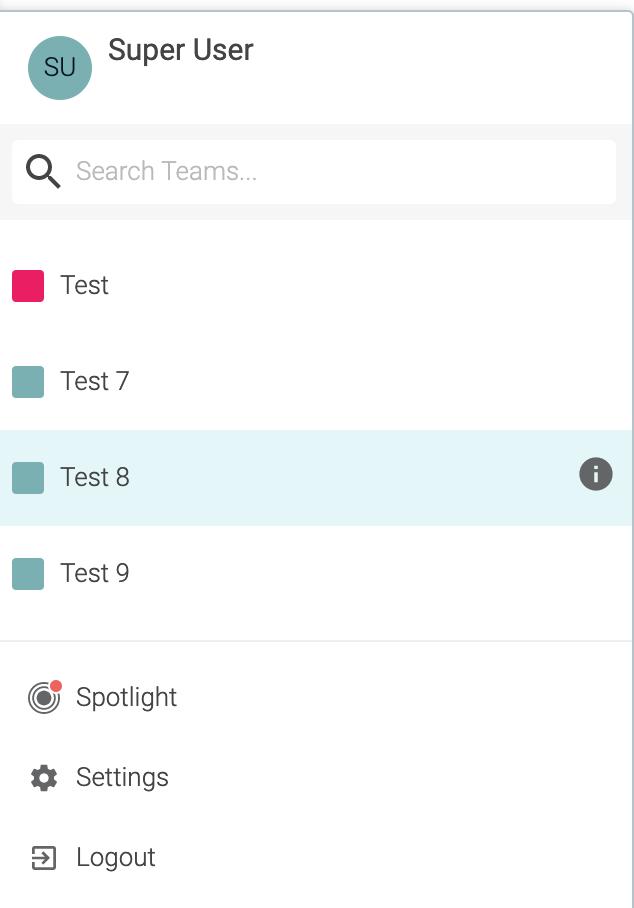

Sysdig On-Premises Release Notes
Note
 For the latest updates, subscribe to the RSS feed.
For the latest updates, subscribe to the RSS feed.
Release 3.6.1 November 23, 2020
Oversight Services Now Offered for All Installs and Upgrades
Note
As part of our continued focus on our customers, we are now offering oversight services for all on-premise installs and upgrades. Your Technical Account Manager (TAM), in conjunction with our support organization and Professional Services [where applicable], will work with you to:
Assess your environment to ensure it is configured correctly
Review your infrastructure to validate the appropriate storage capacities are available
Review and provide recommendations for backing up your Sysdig data
Work with you to ensure our teams are ready to assist you during the install and upgrade process
Provide the software for the install
Be available during the process to ensure a successful deployment
You can always review the process in the documentation on GitHub (v. 3.6.0+) or the standard docs site (for older versions).
If you are a new customer looking to explore Sysdig, please head over here to sign up for a trial on our SaaS Platform. Alternatively, you can contact us here.
Upgrade Process
Supportability Matrix
Sysdig Platform has been tested and qualified against the following.
* Note that as of this release, there are no upgrades for Replicated installations.
Supported Upgrade From | 3.2.2, 3.5.1, 3.6.0 |
Platform | Version |
|---|---|
Vanilla Kubernetes | 1.13.4, 14.10, 1.15.12, 1.16.13, 1.17.9, 1.18.6 |
OpenShift | 3.11, 4.4 |
GKE | 1.14.10-gke.36 |
EKS | v1.17.7-eks-bffbac |
Rancher | v2.3.3 |
IBM | Unqualified |
PKS | Unqualified |
Agent | Version |
|---|---|
sysdig/agent | Qualified with agent release 10.5.2 |
Components | Kubernetes with Statefulsets |
|---|---|
Redis | 4.0.12 |
MySQL | 5.6.44,8.0.16 |
MySQL HA | 8.0.16 |
ElasticSearch | 6.8.6 |
Cassandra | release_version: 2.1.21, cql_version: 3.2.1 |
RDS | 8.0.16 |
Postgres (image scanning) | 12.4 |
Anchore (image scanning) | 0.8.1 |
NATS Exporter | 0.6.0.1 |
NATS Streaming | 0.17.0 |
HA-Proxy | 0.6.2 |
Related Documents
Installation | Additional Docs | |
|---|---|---|
Kubernetes | Review the Upgrade and other files within the version-specific GitHub folder for additional information. | |
Replicated | No Replicated release from 3.6.0 forward. | |
Sysdig Secure
The following improvements were introduced in release 3.6.1:
Node Image Analyzer: Scan "Repo-less" Images
Added support to scan images that lack a Repo tag, such as OpenShift 4.x distribution images.
Audit Tap Forwarding: Fixed Splunk Event Timestamp Metadata
The format of the time field included in the Splunk event metadata for forwarded Audit Tap events is now increased to millisecond granularity.
Fixed False Positives on Java Libraries Related to log4j
Fixed an issue that resulted in log4j-jboss-logmanager and log4j-1.2-api being incorrectly detected as log4j, possibly generating vulnerability false positives.
NOTE: Inline Scanner v2.1
Inline Scanner v2.1 has been released.
This component is independent of the Sysdig Platform version you are running--it can be used with Sysdig On-Prem version 3.6.1 and with earlier versions.
Inline Scanner 2.1 includes the following enhancements:
NEW
Added ability to analyze scratch-based images
FIXES
Fixed a bug retrieving the PDF output for previously- scanned images
Addressed several vulnerabilities found in the inline scanner container
See also: Integrate with CI/CD Tools.
Release 3.6.0 November 10, 2020
Oversight Services Now Offered for All Installs and Upgrades
Note
As part of our continued focus on our customers, we are now offering oversight services for all on-premise installs and upgrades. Your Technical Account Manager (TAM), in conjunction with our support organization and Professional Services [where applicable], will work with you to:
Assess your environment to ensure it is configured correctly
Review your infrastructure to validate the appropriate storage capacities are available
Review and provide recommendations for backing up your Sysdig data
Work with you to ensure our teams are ready to assist you during the install and upgrade process
Provide the software for the install
Be available during the process to ensure a successful deployment
You can always review the process in the documentation on GitHub (v. 3.6.0+) or the standard docs site (for older versions).
If you are a new customer looking to explore Sysdig, please head over here to sign up for a trial on our SaaS Platform. Alternatively, you can contact us here.
Upgrade Process
Supportability Matrix
Sysdig Platform has been tested and qualified against the following.
* Note that as of this release, there are no upgrades for Replicated installations.
Supported Upgrade From | 3.2.2, 3.5.1 |
Platform | Version |
|---|---|
Vanilla Kubernetes | 1.13.4, 14.10, 1.15.12, 1.16.13, 1.17.9, 1.18.6 |
OpenShift | 3.11, 4.4 |
GKE | 1.14.10-gke.36 |
EKS | v1.17.7-eks-bffbac |
Rancher | v2.3.3 |
IBM | Unqualified |
PKS | Unqualified |
Agent | Version |
|---|---|
sysdig/agent | Qualified with agent release 10.5.2 |
Components | Kubernetes with Statefulsets |
|---|---|
Redis | 4.0.12 |
MySQL | 5.6.44,8.0.16 |
MySQL HA | 8.0.16 |
ElasticSearch | 6.8.6 |
Cassandra | release_version: 2.1.21, cql_version: 3.2.1 |
RDS | 8.0.16 |
Postgres (image scanning) | 12.4 |
Anchore (image scanning) | 0.8.1 |
NATS Exporter | 0.6.0.1 |
NATS Streaming | 0.17.0 |
HA-Proxy | 0.6.2 |
Related Documents
Installation | Additional Docs | |
|---|---|---|
Kubernetes | ||
Replicated | No Replicated release of 3.6.0 | |
Sysdig Platform
Interactive Session Expiration Installation-Wide
With this release, you can define a period of interactive-session expiration, so that when a user is idle for a defined period of time, the session terminates. This helps enterprises with strict security and compliance requirements comply with relevant security controls, such as NIST or PCI-DSS 8.1.8 .
Currently, this feature is available for on-premises only and is configured per installation.
See also: Configure Interactive Session Expiration.
Minor Enhancements and Fixes around Users and Teams
Team Search Available when Switching Teams
You can now search for Teams on the Team Switcher. This feature is especially handy for Admins who are members of many teams.
 See also: Switching Teams in the UI.
User search now supports many more users
With this release, we have enhanced the performance for listing and search for users on both
Settings>UsersandSettings>Teamspages. We now support tens of thousands of users comfortably.LDAP: Search for users by both username and email address
For enterprises using LDAP, this release enables search on both username and user email address in the
Settings>Users andSettings>Teamspages. Users are listed by name but can be searched by email as well.LDAP: Default team role respected
This fix ensures that when LDAP users are created upon login, the default user role for the team is respected.
Inline Scanner 2.0
A new version of the Sysdig inline scanner script has been released.
Major improvements:
The inline analysis container doesnt need to spawn any additional containers
This removes the requirement for the Docker client, docker-in-docker, etc.
This enables usage in environments where docker-in-docker is not feasible or hard to instrument (e.g., Tekton).
Additional analysis workflows and formats:
Added support to analyze a docker archive
A .tar.gz file containing the image, i.e. the output from a docker save
Added support to analyze OCI images (both and directory and archive)
Uncompressed or compressed OCI image format
Added support to retrieve an image from the container storage (CRI-O and others)
Additional improvements:
Faster image ingestion
More verbose logs available for troubleshooting and diagnosis
Machine-readable JSON output via
--format JSONcommand
To upgrade an earlier Sysdig Inline Scanning version to 2.0, you need to take into account the new invocation parameters, which are not backward compatible.
Sysdig Inline scanner can be used stand-alone or as a step inside a CI/CD pipeline (Jenkins, Tekton, CircleCI, etc). In the upcoming weeks, we will update the different integrations to provide out-of-the-box support for the 2.0 version.
Sysdig Secure
Regulatory Compliance Control Validation & PCI Checks
A new feature has been added to Sysdig Secure for checking controls from various compliance standards. For the first release, we provide checks against specific controls in PCI 3.2. Future releases will include SOC2, NIST-800-53, and more. See also: Compliance [Beta] in Sysdig documentation.
Compliance Validator and Reports
The validator checks many Sysdig Secure features, including image scanning policies, Falco runtime policies and rules, scheduled benchmark testing, and more. Over time we will add new compliance coverage.
Disclaimer: Sysdig cannot check all controls within a framework, such as those related to physical security.

Note
This feature is a beta release. A Sysdig Secure admin must enable it from the Sysdig Labs interface under Settings.

PCI Control Details
The PCI Quick Reference describes the full range of controls required to pass a PCI 3.2 audit. In this release, Sysdig Secure will check the following subset:
Controls 1.1.2, 1.1.3, 1.1.6.b, 2.2, 2.2.1, 2.2.2, 2.2.a, 2.4, 2.6, 4.1, 6.1, 6.2, 6.4.2, 6.5.1, 6.5.6, 6.5.8, 7.1.2, 7.2.3, 10.1, 10.2, 10.2.1, 10.2.2, 10.2.3, 10.2.6, 10.2.7, 10.3, 10.5.5, 10.6.1, 11.4, 11.5.a, 11.5.b.
Replacing RHSA Advisories with CVE Advisories
In new images scanned, RHSA advisories will be replaced with CVE advisories.
Benchmarks support for Kubernetes Benchmark 1.6
Kubernetes Bench upgraded to version 1.6
Using the Kubernetes benchmark, we now provide customer-selected benchmark checks for GKE and EKS (rather than just the Kubernetes default).
Vulnerability Exceptions Handling Enhanced
The Vulnerability Exceptions feature in Sysdig Secure has been redesigned and enhanced.
It now offers:
Additional vulnerability and feed context
Precise mapping between images and their associated exceptions
A better exception management lifecycle
Multiple vulnerability lists, which can be flexibly assigned to different image sets (or just a particular image), using the scanning policy assignments
Additional information displayed to improve team awareness and security context
Vulnerability description
User-defined notes
Vulnerability feed info, with severities and links as provided per feed
Configurable expiration dates:
An exception is automatically disabled when the expiration date is met
Day resolution, all times relative to 0:00 UTC
Enhanced workflow integration with the Scan results page for an individual image, with the ability to quickly append a flagged vulnerability to a list.
Migration: The exception and evaluation behavior in the current environment will be maintained after the feature upgrade. In particular:
Pre-existing vulnerability exceptions will be migrated to the Default exceptions list
The Default exceptions list will be assigned to every pre-existing policy assignment
All the pre-existing vulnerability exceptions expiration date will be set to Never."
Event Forwarding: Kafka and Webhook Added
Two new supported integrations have been added to the Sysdig Secure Event Forwarder:

The Kafka topic integration includes support for:
Multiple Kafka brokers
Partitioner/Balancer algorithms: Murmur2, Round robin, Least bytes, Hash, CRC32
Compression algorithms: LZ4, Snappy, Gzip, Zstandard
The Webhook integration includes support for:
Authentication methods: Basic authentication, Bearer Token, and Signature Header
Custom headers defined by the user to accommodate any additional parameter required on the receiving end
Image Exclusion on Policy Events
Users often want to tune policy events. Weve added a button on the event detail that will add an exclusion to a specific container.image.repo for the policy that triggered the event. Once that exclusion is applied to the scope, policies will no longer fire for that container.image.repo.
Captures Filter on the Policies Page
Policies can now be filtered to display if a capture is associated with an active or inactive policy.

Quick Menu to Captures from Runtime Events
For runtime policy events that have an associated capture, we now offer a contextual menu for performing quick actions over the event capture, rather than a simple link to the Captures interface. You can:
View the capture directly in Sysdig Inspect
Directly download or delete the capture
Additionally, if the event is scoped to a particular container, Sysdig Inspect will automatically filter the displayed information to the scope of that Container ID.
Image Scan Results Page Redesigned to Improve Load Times & User Experience
The user interface is cleaned up, reorganized, and provides the following functional improvements:
Load times are significantly decreased because the last known evaluation for the image is automatically fetched
View the latest evaluation time directly in the scan summary
Evaluated atUse the new
Re-evaluatebutton to fetch current data if desired
View the image origin/reporting mechanism in the new "Added By" field.
Possible values are:
Sysdig Secure UI,Node Image Analyzer,API,Sysdig Inline Scanner, orScanning alert.Copy the Image Digest and Image ID to the clipboard using a quick pop-up panel.
Forwarding the Activity Audit Information
The Sysdig Secure Event Forwarder has added support to forward Activity Audit data to external platforms.
Sysdig Monitor
Time Navigation in Events Feed
You can now browse and find historic events easily by using time navigation.
Zooming Out Dashboards
You now have the ability to zoom out Dashboards. This feature doubles the selected timeframe for a better context surrounding a problem when troubleshooting an incident.
Release 3.5.0 July 17, 2020
Caution
It is recommended to skip version 3.5.0 and install version 3.5.1 instead.
Upgrade Process
Supportability Matrix
Sysdig Platform has been tested and qualified against the following:
Supported Upgrade From | 3.2.x, 3.0 |
Platform | Version |
|---|---|
Vanilla Kubernetes | 1.13.4, 14.10, 1.15.12, 1.16.13, 1.17.9, 1.18.6 |
OpenShift | 4.4 --> 1.17.1+1aa1c48 |
GKE | 1.14.10-gke.36 |
EKS | v1.17.7-eks-bffbac |
Rancher | v2.3.3 |
IBM | Unqualified |
PKS | Unqualified |
Agent | Version |
|---|---|
sysdig/agent | 10.2.0 |
Components | Replicated TBD | Kubernetes with Statefulsets |
|---|---|---|
Redis | n/a | 4.0.12 |
MySQL | n/a | 5.6.44 |
MySQL HA* | n/a | 8.0.16 (see note) |
ElasticSearch* | n/a | 6.8.3 (see note) |
Cassandra | n/a | release_version: 2.1.21 cql_version: 3.2.1 |
RDS | n/a | 8.0.16 |
Postgres (image scanning)* | n/a | 12.3 (see note) |
Anchore (image scanning) | n/a | 0.6.1 |
NATS Exporter | n/a | 0.6.0.1 |
NATS Streaming | n/a | 0.17.0.1 |
HA-Proxy | n/a | 1.9.15 |
Note
* ElasticSearch: ElasticSearch 6.8.3 is not shipped by default for upgrades. If you are upgrading rather than installing for the first time, you must configure useES6: true in the install.
*MySQL8: You can use MySQL8 for non-HA setups using the flag useMySQL8: true
* Postgres: Upgrading to 3.5.0 will also involve an automatic Postgres version upgrade from 10.6.x to 12.x. Depending on your database size, the upgrade could take some time. See Postgres Version Update v10.x to 12.x for details.
Related Documents
Installation | Upgrade | |
|---|---|---|
Kubernetes | ||
Replicated | The 3.5 release will be promoted to replicated in the upcoming weeks. |
Sysdig Platform
Endpoint for Feeds Update Has Changed
We no longer point toancho.refor feeds update but tohttps://api.sysdigcloud.com/api/scanning-feeds/v1/feeds. This could require a change to your firewall rules, as an exception to your proxy for ancho.re would impact the feeds update.
Sysdig Secure
New Sysdig Secure Overview Page
The Sysdig Secure Overview provides an at-a-glance view of the critical areas of your security posture.

Scoping
Panels can be scoped by Cluster or Namespace. The scope will update all panels that are displaying run-time data and the corresponding drill-down views.
Panels
Build Time - Images Scanned: Image scan results for all static image scans
Drill-down - To Image Scanning Reports page.
Build Time - CVEs Found by Severity: The total number of CVEs present in each image scanned.
Drill-down - Available in a future release
Run-time - Images Scanned: The pass/fail status of images running now and their trend over time.
Drill-down - To Runtime Scanning Image page.
Run-time - CVEs by Severity: The total number of CVEs present in each running image
Drill-down - Available in a future release
Run-time - Policy Events by Severity: The total number of policy events by severity.
Drill-down - Secure Events page.
Benchmarks Tests Failing: The total number of benchmark tests that have failed.
Drill-down - Benchmarks Results page.
See also: Secure Overview [BETA].
New Get Started Page
The Get Started page provides the key steps to ensure users are getting the most value out of Sysdig Secure. Well update this page with new steps as we add new features to Sysdig Secure.

The Get Started page also serves as a linking page for:
Documentation
Release Notes
The Sysdig Blog
Self-Paced Training
Support
Users can access the page at any time by clicking the rocketship in the side menu.
See also: Getting Started with Sysdig Secure.
Feeds Status Page Added
Its useful to understand the last time the feeds were updated, especially in self-hosted environments. The Feeds Status page shows the different vulnerability feeds we integrate with, their feed group (often the distro version), the time of the last sync, and how many CVE records are present in the feed group.

See also: Feeds Status.
Secure Events Feed Overhaul
The Events feed in Sysdig Secure (formerly called Policy Events) has been redesigned, both visually and functionally.

Apart from the styling and user experience improvements, these are the major new features and use cases
Advanced Filtering
We are deprecating the grouping/clustering of events present in the old version in favor of a much more powerful set of filtering capabilities:
Severity filters: Presented as quick buttons at the top, supporting multi-select
Attribute filters: Provide a simplified syntax to filter events by the attributes they contain. For example
ruleType="Falco - Syscall"orimage.repo!="sysdig/agent"Open the event details side panel to find quick filtering widgets to include or exclude the attribute values associated with the displayed event
Event type selector: Supports runtime scanning alerts on top of policy runtime events (see section below), with an easy multi-selector in the UI.
Free text search: Allows you to search the event titles and scope label values. I.e.
Terminal shell inormy-k8s-cluster.New scope selector: Allows for additional selector logic (
in,not in,contains,startswith, etc), improving the scoping flexibility over earlier versions. This scope selector also provides scope variables, allowing you to quickly switch between, for example, Kubernetes namespaces without having to edit the panel scope.
All these filters can be combined additively to further refine your search.
Multiple Event Types
The new event feed displays not only the policy runtime events, but also runtime image scanning alerts.
The backend architecture, filtering, and UX have been designed to accommodate additional types of security events that will be pushed to the Event Feed in the future, upgrading the interface from a policy-runtime-centric experience to a full security center control panel.
Additional Event Details
Policy runtime events: These now display the rule that was fired together with the rule labels. You can use the quick filters mentioned above to further refine the search.
Richer scope: Every security event now displays all the scope labels retrieved for the event, not just those configured in the scope selector.
See also: Secure Events.
Additional Considerations/Limitations
Events in the old and new format will be stored separately:
No event or event data will be lost during the transition
Events that were registered before the new feed is deployed can be browsed using the old feed interface, which is available from the burger menu in the top-right corner
Events that happen after the new feed is deployed will appear in the new event feed
Eventually, all events within the retention period will be present in the new interface, at which point the version switcher will disappear
Team, Role, and Channel Updates
A variety of enhancements have been added to the team, role, and notification channel options.

Service Manager Role Added to Sysdig Secure
RBAC capability was previously added to Sysdig Secure. (See also January 27, 2020 and User and Team Administration.)
Now a new role, Service Manager, is also available in Secure. It has the same permissions as the Standard User, plus the ability to invite existing users to the team and manage the notifications channels assigned to the team. See Team-Based Roles and Privileges
Configurable Default Team Role
You can now define the default user role to apply when a new member is added to the team. The Admin can change this default on a per-team basis. See also: Create a Team.
RBAC and Team Assignment for Notification Channels
Previously, notification channels in Sysdig Secure and Monitor were treated as global entities, visible and editable for most users of the platform regardless of team configurations.
We are enhancing the management and RBAC controls in the following ways:
Notification channels can now be global or limited to a particular team
Global channels can be managed by admins and can be viewed/used by other roles, while team-limited channels are available only to team members
Team Manager , Advanced User, and Service Manager (Secure) roles can create/update/delete team-scoped notification channels, they can also read and use the global ones
Standard and View Only roles can read team-limited and global notification channels
Admins will be able to create global notification channels and migrate channels from global to team-limited, and also from one team to another.
See also: Set Up Notification Channels and the Share With field in each individual channel setting page.
Optimized Runtime Page
Weve released a new Runtime page for the Image Scanning module within Sysdig Secure.Improvements include:
Filtering based on pass/fail/unscanned
The ability to search results for a specific image
Optimized queries to improve response times
For more information, see Review Scan Results.
Menu Update
The ordering of the side menu has been changed.

Image Scanning Updates
The image scanning navigation bar has changed.
The side menu is reorganized into Analyze and Configure sections
Analyze: Different areas of scanning that allow users to view scan results
Configure: The areas of scanning that involve the setup of the application
Whitelist terminology with CVEs has been removed.
"CVE whitelist" is now CVE Exceptions.

CLI-Based Admission Controller for Image Scanning
An additional tool for evaluating and admitting images is now available.
Sysdig Admission Controller
Sysdigs Admission Controller combines the Sysdig Secure image scanner with a policy language to evaluate scan results and the admission context, providing great flexibility in the admission decision.
By using Kubernetes API extensions to perform image scanning and other security checks on admission, we cover a major threat-prevention and hardening use case:Only the images that are explicitly approved will be allowed to run on my cluster.
The admission decision relies not only on the image name and tag but also on additional context from the admission review, including namespace, pod metadata, etc.
Features
Registry and repository whitelist / blacklist
Global and per-namespace admission configuration
Configurable pre-scan and post-scan behavior, i.e.:
Accept only the images that pass the scan (default)
Directly reject non-whitelisted registries / repos, without scanning
Accept the image even if it doesnt pass the scan
Do not accept any image that hasnt been scanned already
Pod mutation: image tag is replaced by digest to prevent TOCTOU (Time of Check, Time of Use) issue if the tag is updated between the scan and the pod scheduling
Requirements
Helm 3
Kubernetes 1.15 or higher
For more information, see Admission Controller .
Added Automatic Image Scanning using Node Analyzer
The node image analyzer (NIA) provides the capability to scan images as soon as they start running on hosts where the analyzer is installed. It is typically installed alongside the Sysdig agent container.
This component was introduced to reduce dependencies on analyzing images within the Sysdig backend (SaaS or On-prem). Some advantages include:
Sharing credentials with the Sysdig backend in order to pull images is not required
Sharing the image content and potentially code with the Sysdig backend is not required; only metadata will be sent out
Opening a network route to allow the Sysdig backend to reach the user's registries is not required
Note
If you have run the single line agent install with the --image-analyzer flag, then this component is already running in your infrastructure.
The feature is available for Kubernetes environments.
For more information, see Scan Running Images.
Added Image Scanning Integration Options
Two new scanning integrations are available for CI/CD pipelines. Sysdig provides:
A reference implementation with Tekton Pipelines (prototype)
A fully supported integration with Amazon Elastic Container Registry (ECR) for triggering auto-scans from the registry
Integrating Secure Image Scanning with Tekton Pipelines
Tekton Pipelines allow you to implement CI/CD workflows using a highly modular, cloud-native approach that:
Uses containers as the building blocks for individual tasks
Runs directly on Kubernetes/OpenShift without requiring a dedicated infrastructure
Uses tasks that are purely declarative and described using their own CRD, making them easily composable and reusable
Sysdig's reference implementation details the prototype task to invoke Sysdig Secure image scanning as a pluggable step in your CI/CD pipeline with just a YAML file:
 |
Leveraging Tekton integration with the orchestration layer, you can retrieve the image scanning policy evaluation and state (pass/fail) directly from the logs of the task pod.
Read the Securing Tekton pipelines in OpenShift with Sysdig blog post for additional details
Integrating Secure Image Scanning with Amazon ECR
Automatically scan images pushed to your Amazon Elastic Container Registry (ECR) using AWS-native technologies and Sysdig Secure.
Sysdig image scanner integration is deployed as a CloudFormation template that listens to ECR registry events and uses AWS resources to streamline the image scanning process.
ECR itself will trigger the scan, no need for your CI/CD pipelines to actively pull from the registry
Deployed in a few clicks, you just provide basic configuration parameters such as the Sysdig API token or the Sysdig backend URL
No need to configure registry scanning credentials on the Sysdig Secure side

This integration offers two different operation modes
Inline scanning:
Scanning will be performed inside an AWS CodeBuild pipeline allocating ephemeral resources
No need to configure any registry credentials for Sysdig Secure
No need to expose your ECR registry to the Sysdig Secure backend
Sysdig Secure will not retrieve the image contents, only the metadata that is required to perform the policy evaluation
Backend scanning:
Sysdig Secure will retrieve the full image contents in order to perform the scan
Your ECR registry must be reachable by the Sysdig Secure backend
Registry credentials are required, but they are pushed automatically by a lambda function, no need for manual configuration
See also: Amazon ECR Integration.
Updated Inline Scan Script
Added header values for import API for better supportability.
Upgraded to Anchore engine v0.6.1.
Use
docker:dindinstead ofubuntufor the base image. This reduces the image size and speeds up downloading.
The latest version of the inline script will always be available at https://download.sysdig.com/stable/inline_scan.sh
Link to repo for script source code: https://github.com/sysdiglabs/secure-inline-scan
Inline Scanning Reporting Improvements and Documentation
This script from SysdigLabs is useful for performing image analysis on locally built container images and posts. The only dependency for this script is access to docker-engine, Sysdig Secure endpoint (with the API token) and network connectivity to post image analysis results.
Here are examples of using the inline scanner in different pipelines:
PDF Reports from the Inline Scanner
A new option
-R [optional] Download scan result pdf report
will generate a PDF artifact that is available for developers to consume in the pipeline.
Updates to Default Rules and Policies
The following changes have been made to default Policies in Sysdig Secure, and to default Falco rules:
New rule tags added that map Falco rules to PCI and NIST controls
New default policies added specifically for PIC/NIST compliance
Tuning modifications for:
Write below etc
Write below root
Change thread namespace
Run shell untrusted
Detect outbound connections to common miner pool ports
For more information, see also Falco Rules Changelog.
New Vulnerability Feed Available: VulnDB
Weve added VulnDB as an additional 3rd-party vulnerability source to improve Sysdig's coverage in non-OS package vulnerabilities.
In addition, a new page is available for each VULNDB-linked advisory. It lists the CVEs and details about the Common Vulnerability Scoring System (CVSS) scores and external references.

See also: Vulnerability Databases Used.
Linux CIS Benchmark Test Added
Sysdig Agents can run the Independent Linux benchmark against the underlying host where the agent is installed. The Linux benchmark can be scheduled to run at a chosen interval in your environment and emits results and metrics about the status of the tests.

Openshift Hardening Guide
The Openshift hardening guide implements configuration checks run by the agent against Openshift environments.
Note: This is supported for 3.x versions of Openshift. When Openshift releases a hardening guide for 4.x versions, we will update the configuration checks.

Captures can be Routed to Specific Storage Locations
As a user, you may have different S3 buckets where youd like to store Sysdig captures, based on the environment where the policy event was triggered. New options are available for deciding what storage option youd like to use for each policy event.

Sysdig Monitor
New Dashboards is GA
Sysdig Monitor offers a new version of dashboards. Its improved editing experience provides you with more flexibility and the new set of functionalities offers additional ways to visualize and consume your Sysdig data.

Features and Enhancements
Improved User Experience
The New Dashboard offers a more fluid, natural dashboard building experience. For more information, see About the Dashboard UI.
Dashboard Sharing
You can now share your dashboard with members within your Sysdig team or share it across teams with fine-grained access controls. Define who should be able to see the dashboards and what level of access they should be granted: view only or collaborator with edit privileges. For more information, see Sharing New Dashboards
Time Series Name Templating
Customize the time series names on the legend on the panel editor by using the labels associated with Prometheus metrics and segments to gain context faster. For more information, see Create a New Panel.
Multi-Metric, Multi-Segmentation Options
Configure multiple queries within a single panel, and configure each query with multiple segmentation and scoping options. Individual queries can be customized to render as a line or stacked area. For more information, see Create a New Panel.
Event Overlay
Contextualize metrics and understand the why faster with a unified view of both metrics and events. Configure event overlay to display events from Kubernetes environments as well as alert events, and any other events ingested using Sysdigs open REST API. For more information, see Display Dashboard Specific Events.
Dashboard Templates
You can quickly view your infrastructure through the lens of one of Sysdigs curated dashboards, or use it as a base to start building your own. You can find dashboard templates for managing Kubernetes capacity and health, hosts and server performance, applications and services telemetry, and the security posture of your infrastructure with data fed from Sysdig Secure. See Dashboard Templates to learn more.
Mapping Values to Text
Instantly understand whats going on by mapping number panel values to text. If you have a metric that returns 1 for up, and 0 for down, map those values to UP and DOWN respectively. By defining thresholds and mapping to text, you don't need to be concerned about the values. This is critically valuable when dashboards are shared between team members. For more information, see Text.
Granular Axes and Legend Controls
You have more flexibility when customizing the axes, as well as better support for time series with long names. You can now configure the legend by toggling its visibility and moving it to the bottom of the panel. See About the Dashboard UI.
Major Changes
Significant changes have been introduced to enhance the usability of the existing functionalities. Review the changes before you explore the functionalities.
Topology Maps
Topology maps are no longer available in Dashboard. Access Topology maps through Explore, as you explore your microservices and Kubernetes applications.
Dashboard Wizard
My Dashboards are no longer accessible in Explore. Additionally, Dashboard Wizard has been removed. Instead, the concept of Templates has been introduced in Dashboards to help you get started with a library of templates addressing key use cases.
Histogram and Summary Metric Type
Histogram and summary metrics are no longer supported in the Histogram panel type. You can continue to use them within Explore.
APIs and Integrations
API endpoints for the legacy dashboards (v2) will soon be deprecated. If you are directly integrating into the API, please contact Sysdig for guidance. Additionally, our Python SDK and CLI have been updated to support the new dashboards APIs.
Sysdig Monitor Rebranding
The Monitor app has been refreshed with new logos and icons. The navigation pane has been re-organized. The Explore tab is moved below Dashboards.

The New Get Started Page
The Get Started page provides the key steps to ensure that you are getting the most value out of Sysdig Monitor. Well update this page with new steps as we add new features to Sysdig Monitor.

The Get Started page also serves as a linking page for:
Documentation
Release Notes
The Sysdig Blog
Self-Paced Training
Support
You can access the page at any time by clicking the rocketship icon in the left navigation bar. See Getting Started with Sysdig Monitor.
RBAC and Team Assignment for Notification Channels
Previously, notification channels in Sysdig Secure and Monitor were treated as global entities, visible and editable for most users of the platform regardless of team configurations.
We are enhancing the management and RBAC controls in the following ways:
Notification channels can now be global or limited to a particular team
Global channels can be managed by admins and can be viewed/used by other roles, while team-limited channels are available only to team members
Team Manager , Advanced User, and Service Manager (Secure) roles can create/update/delete team-scoped notification channels, they can also read and use the global ones
Standard and View Only roles can read team-limited and global notification channels
Admins will be able to create global notification channels and migrate channels from global to team-limited, and also from one team to another.
See also: Set Up Notification Channels and the Share With field in each individual channel setting page.
AWS Role Delegation
Sysdig Monitor can now utilize the Amazon Web Service (AWS) AssumeRole functionality and discover cloud assets, grab CloudWatch metrics from your AWS account, and use custom S3 bucket for storing captures. Upon integrating with an AWS role, you can delegate access to AWS resources that are not associated with your Sysdig AWS account.
Role delegation is an alternative to the existing integration method using the access keys. This method is considered secure as sharing developer access keys with third-parties is not recommended by Amazon.
For more information, see Integrate with AWS Role Delegation.
Configurable Default Team Role
You can now define the default user role to apply when a new member is added to the team. The Admin can change this default on a per-team basis. See also: Create a Team.
Default Dashboards for Istio 1.5
Default dashboards (Overview and Services dashboards) are now available for Istio v1.5 in addition to the existing ones for Istio v1.0.
Release 3.2.2, June 11, 2020
This is a hotfix release for Benchmarks. See Defect Fixes for details.
Upgrade Process
Supportability Matrix
Sysdig Platform has been tested and qualified against the following:
Supported Upgrade From | 2.5.0, 3.0 |
Platform | Version |
|---|---|
Vanilla Kubernetes | 1.13.4, 1.15.3 and 1.16.0 |
OpenShift | 3.11, 4.2 and 4.3 |
GKE | v1.14.6-gke.13 |
EKS | EKS .7, Kubernetes 1.14 |
Rancher | v2.3.3 |
IBM | Unqualified |
PKS | Unqualified |
Agent | Version |
|---|---|
sysdig/agent | 10.1.1 |
Components | Replicated | Kubernetes with Statefulsets |
|---|---|---|
Redis | 4.0.12.7 | 4.0.12.7 |
MySQL | 5.6.44.0 | 8.0.16.2 |
ElasticSearch | 5.6.16.15 | 5.6.16.15 |
Cassandra | 2.1.21.16 | 2.1.21.16 |
RDS | n/a | 8.0.16 |
Postgres (image scanning) | n/a | 10.6.11 |
Anchore (image scanning) | n/a | 0.5.1.2 |
NATS Exporter | n/a | 0.6.0.1 |
NATS Streaming | n/a | 0.16.2.1 |
Related Documents
Installation | Upgrade | |
|---|---|---|
Replicated | ||
Kubernetes | Installer-based: | Installer-based: |
Manual: | Manual: |
Sysdig Secure
Defect Fixes
Problem: On a cluster running Kubernetes v1.12 or later versions with Sysdig agent v9.7.0 or later versions, the CIS Kubernetes benchmark result could not be interpreted, resulting in an infinite spinner displayed in the UI.
Resolution: Sysdig agents v9.7.0 or later versions can now be used with Kubernetes v1.12 or later versions. The CIS Kubernetes versions included are 1.3, 1.4, and 1.5.
Sysdig Monitor
This release contains no new features or defect fixes.
Sysdig Platform
This release contains no new features or defect fixes.
Release 3.2.1-Onprem (Replicated Only), March 23, 2020
This is a hotfix release that enforces a minimum Replicated Console version to include a necessary security patch. This release contains no new Sysdig functionality and is not a required upgrade.
Note
Use of release 3.2.1-onprem requires first upgrading your Replicated Console to version 2.42.4 or newer.
Release 3.0.0, December 19, 2019
Upgrade Process
Supportability Matrix
Sysdig Platform has been tested and qualified against the following:
Supported Upgrade From | 2.4.1, 2.5.0 |
Platform | Version |
|---|---|
Vanilla Kubernetes | 1.13.4, 1.15.3 and 1.16.0 |
OpenShift | 3.11, 4.1 and 4.2 |
GKE | v1.14.6-gke.13 |
EKS | v1.14-eks.7 |
Rancher | v2.3.3 |
IBM | Unqualified |
PKS | Unqualified |
Agent | Version |
|---|---|
sysdig/agent | 0.93.1 |
Components | Replicated | Kubernetes with Statefulsets |
|---|---|---|
Redis | 4.0.12.7 | 4.0.12.7 |
MySQL | 5.6.44.0 | 8.0.16.2 |
ElasticSearch | 5.6.16.15 | 5.6.16.15 |
Cassandra | 2.1.21.16 | 2.1.21.16 |
RDS | n/a | 8.0.16 |
Postgres (image scanning) | n/a | 10.6.11 |
Anchore (image scanning) | n/a | 0.5.1. |
NATS Exporter | n/a | 0.6.0.1 |
NATS Streaming | n/a | 0.16.2.1 |
Related Documents
Installation | Upgrade | |
|---|---|---|
Replicated | ||
Kubernetes | Installer-based: | Installer-based: |
Manual: | Manual: |
Sysdig Secure
Activity Audit (Beta)
The Activity Audit in Sysdig Secure allows you to browse a live stream of activity from your Kubernetes containers and nodes. Audit takes the highly detailed data from syscalls and Kubernetes audit logs captured at the agent level, and makes it always-on, searchable, and indexed against your cloud-native assets.
This stream includes executed commands, network activity, and kubectl exec requests to the Kubernetes API. The Activity Audit allows users to view different data sources in-depth for monitoring, troubleshooting, diagnostics, or to meet regulatory controls (SOC2, NIST, PCI, etc).

Flexible filtering and scoping to help you focus on whats relevant: Filters allow you to search, sort, and surface meaningful data and connections as they are needed. You can filter by data source type, data source attributes (like command name or Kubernetes user) and dynamic Kubernetes scope
Automatically trace a kubectl exec session : The built-in trace functionality allows you to isolate and trace a kubectl exec access to a pod, automatically correlating the original Kubernetes user and IP that accessed the pod with the activity that was performed during the interactive session, including commands and network connections.

Note
Activity Audit is a Preview Beta feature. Contact your customer success manager to learn more about rolling out this feature.
Kubernetes Policy Advisor (Beta)
With the Kubernetes Policy Advisor, Sysdig Secure auto-generates Pod Security Policies (PSPs) to significantly decrease the time spent configuring Kubernetes Policies. Strict security policies reduce risk, but can also break applications. Sysdig tests the impact of pod security policies through simulations, enabling teams to adjust misconfigurations before shifting to production.There are three main features that comprise the Kubernetes Policy Advisor:
Auto generation: Sysdig Secure can parse any Kubernetes yaml file that includes a pod spec to generate a tailor-made PSP based on the configuration.

Simulations: Start a simulation of the auto-generated PSP or any user-inputted PSP to see what pods would have been blocked from running if this PSP had been actively applied to the cluster.

Events and tuning: Each pod/activity that would have violated the PSP will generate an event. Within the event details, users can see information about potential modifications they may need to make to the policy or the pod configuration.

Scanning Improvements
New Scanning Rules
File attributes can now be verified as part of the image scan analysis. A specific file can be validated against a node or sha256 hash.

Scale Improvements to Scanning Reporting
No query conditions are required as part of the Package and Policy Queries.
Google Distro-less OS
Support for images based on Google distro-less OS, including detection of base OS/version and installed OS dpkg packages.
Sysdig Monitor
Overview Is GA
Overview is now generally available. Overview leverages Sysdig's unified Kubernetes data platform to monitor, secure, and troubleshoot your Kubernetes clusters and workloads.
Notice
Please contact your Sysdig Technical Account Manager or email support to enable Overview for on-premises environments.

Major highlights of Overview GA include but are not limited to:
Multi-cloud view of the health, risk, and capacity of your Kubernetes infrastructure a single pane of glass for Kubernetes Clusters, Nodes, Namespaces, and Workloads across a multi- and hybrid-cloud environment. You can easily filter by any of these entities and view associated events and health data. View the infrastructure organized by Clusters, Nodes, Workloads
Shows metrics prioritized by event count and severity, allowing you to get to the root cause of the problem faster.
Drill down to Dashboards for instant insights.
To learn about the capabilities of the Overview feature, see Overview.
Enhanced Out-of-the-box Dashboards
In an attempt to improve the Dashboards experience, the following changes have been introduced:
The following Dashboards are added:
Kubernetes Cluster Overview: Provides nodes and workloads availability and highlights the high-level health of your Clusters. It also summarizes resources consumption (CPU, memory) across Nodes and Namespaces to pinpoint possible anomalies and node disk utilization
Kubernetes Node Overview: Provides availability of the Nodes, indicating potential issues reported by Kubernetes; a summary of resource (CPU and Memory) allocation and utilization, as well as Network and Disk utilization.
Kubernetes Namespace Overview: Provides a high-level summary of availability, and resource allocation and utilization across all the Workloads in the selected Namespace.
Kubernetes Deployment Overview: Provides a detailed summary of pod status, pod restarts, as well as resource allocation and utilization across pods for each Workload.
Kubernetes StatefulSet Overview: Provides a detailed summary of pod status, pod restarts, as well as resource allocation and utilization across pods for each StatefulSet.
Kubernetes DaemonSet Overview: Provides a detailed summary of pod status, pod restarts, as well as resource allocation and utilization across pods.
Kubernetes Job Overview: Provides a detailed summary of job status, completion trend, pod restarts, as well as resource allocation and utilization across pods.
Kubernetes ReplicaSet Overview: Provides a detailed summary of pod status, pod restarts, as well as resource allocation and utilization across pods for each ReplicaSet.
Kubernetes Pod Overview: Provides a detailed summary of pod status, pod restarts, and resource allocation and utilization in a selected pod.
Kubernetes Workloads CPU Usage and Allocation: Helps you verify that CPU requests are properly configured and actual utilization is expected.
Kubernetes Workloads Memory Usage and Allocation: Helps you verify that memory requests are properly configured and actual utilization is expected.
Kubernetes CPU Allocation Optimization: Helps you verify that infrastructure resources are available for future needs and are not wasted.
Kubernetes Memory Allocation Optimization: Helps you verify that infrastructure resources are available for future needs and are not wasted.
The following Dashboards are retained:
Health Overview (applicable to all the objects in the environment)
Horizontal Pod Autoscaler (the default Dashboard when selecting an HPA)
Resource Quota
Service Health (the default dashboard when selecting a service)
Cluster and Node Capacity
The following Dashboards are removed:
State Overview
Daemonset State
Namespace State
Stateful State
Nodes State
Deployment State
Deployment Health
Nodes Health
Namespace Health
Pod State
Pod Health
Replica Set Health
For more information, see Pre-Defined Dashboards
Filtering Events by Scope
Events are now filtered by Scope to show the most relevant Events in Explore and Dashboards. This is an extension of the existing Event Scope functionality. You can toggle between showing Event feed from the entire infrastructure and only from the particular scope you are interested in within the infrastructure. Event scoping for Dashboards and Explore is enabled by default.

Filter Events by Scope in Dashboards
By default, Events are filtered to show only the relevant ones. However, you can turn the filtering off and see Events from the complete scope. To do so:
Click the Dashboard Settings (three dots) icon and select Events.
Use the toggle button to turn off Filter events by dashboard Scope.

Click Save.
Similarly, you can filter Events by Scope in Explore.
What's n/a?
The Sysdig Monitor UI displays n/a in several scenarios associated with labeling. The Explore UI has now been enhanced to add a tooltip for n/a to help you understand the scenario. See The Meaning of n/a for more information.
Release 2.5.0, October 29, 2019
Upgrade Process
Kubernetes and OpenShift environments upgrade to 2.5.0 using the new installer tool (see below).
Supported Upgrade Path: 2.3.0, 2.4.1
Sysdig Platform
New Installer Tool for Kubernetes/OpenShift Environments
With this release, Sysdig platforms can be installed and upgraded using a semi-automated installer tool that greatly simplifies the installation process. Available for Kubernetes and OpenShift environments.
SeeInstaller (Kubernetes | OpenShift) 3.5.0 and Installer Upgrade (2.5.0+) for details.
Enhancement: New Documentation Site at docs.sysdig.com
Sysdig's documentation platform has been upgraded and moved to docs.sysdig.com.
Improvements include:
Look and feel: Updated to match the rest of the Sysdig branding
Search: Enhanced search speed, accuracy, and ease
Structure and content: Enhancements to content have been added and are being continuously updated
Feedback: Buttons on each page enable users to communicate directly with the documentation team.
Sysdig CLI
The Sysdig CLI provides an easy way to interact with the cli via the command line. Read more here.
Usage:
Run it without parameters to get a list of all the commands.
$ sdc-cli
Usage: sdc-cli [OPTIONS] COMMAND [ARGS]...
You can provide the monitor/secure tokens by the SDC_MONITOR_TOKEN and
SDC_SECURE_TOKEN environment variables.
Options:
-c, --config TEXT Uses the provided file as a config file. If the config
file is not provided, it will be searched at
~/.config/sdc-cli/config.yml and /etc/sdc-cli/config.yml.
-e, --env TEXT Uses a preconfigured environment in the config file. If
it's not provided, it will use the 'main' environment or
retrieve it from the env var SDC_ENV.
--json Output raw API JSON
--version Show the version and exit.
--help Show this message and exit.
Commands:
alert Sysdig Monitor alert operations
backup Backup operations
capture Sysdig capture operations
command Sysdig Secure commands audit operations
compliance Sysdig Secure compliance operations
dashboard Sysdig Monitor dashboard operations
event Sysdig Monitor events operations
policy Sysdig Secure policy operations
scanning Scanning operations
settings Settings operations
profile Profile operations
Sysdig Monitor
Ability to "Favorite" a Dashboard
Users can click the star icon to mark a "Favorite" dashboard, which will then be listed under "My Favorites" in the Dashboard view.


Sysdig Secure
In-Line Scanning
Images can now be analyzed locally before they are pushed to a registry. This has a few key benefits to users.
Images can be analyzed before theyre pushed to a registry and reduce registry cost
Customers using the Sysdig Secure SaaS offering dont need to expose their registry to our SaaS for images to be scanned
For OpenShift users, the in-lince scan option can be integrated into the S2I process to scan images without needing to expose a local cluster registry via a route
Learn more and access the script here: https://github.com/sysdiglabs/secure-inline-scan
SSO Configuration Pages Available in Secure
A UI for configuring Single Sign-On for Sysdig Secure is now available from the Settings menu. See Authentication and Authorization (On-Prem Options).
New Package Reports
Package name/version are now grouped together to provide easy parsing of all CVEs associated with a package and the images using that package.

New Trigger Parameters for CVSS Score
Image Vulnerabilities can now be evaluated against their CVSS (Common Vulnerabilities Scoring System) score. If a vulnerability is =, <;>, <=, or>= to a specific score, then the rule can trigger a warn/stopaction.

Time Ranges Updated
The default time range options have been updated in Sysdig Secure.
The default time ranges are now set to:
10 Minutes
30 Minutes
1 HR
6 HRs
1 Day
3 Days
To look at a custom window of time, use the manual time window.
Sysdig Secure Summary Dashboard in Sysdig Monitor
Sysdig Monitor includes default dashboards that provide metrics about number of agents installed, active policies, events that have occurred, and the policies that have triggered them. Use these dashboards to identify trends, report on coverage, or facilitate the tuning process.

Release 2.4.1, September 18, 2019
Upgrade Process
Review the Migration Path tables in On-Premises Upgrades
Supported upgrade path: 2.3.0
Sysdig Platform
Secure Authentication for Cassandra and Elasticsearch on Replicated
Cassandra and Elasticsearch datastores now have an extra layer of security on Replicated. Sysdig Replicated install allows you to enable authentication and secure communication between Sysdig backend components and the Elasticsearch or Cassandra datastores. For more information, see Install with Replicated.
[BETA] Audit Logging
The following APIs have been introduced to support administrators to view a log of user activities and modifications to the components in the system:
AppAttributes
AuditEvents
Audit logs stand for chronologically cataloged events to provide a history of operational actions and to mitigate challenges. The ability to trace an event back to its origin provides proof of compliance, operational integrity, and protection from unsolicited use. For more information, see [BETA] Auditing Sysdig Platform Activities.
Known Issues
If you want to use Audit logging and have MySQL in your Kubernetes HA environment, run kubectl -n sysdigcloud delete pod -l role=worker to ensure Audit logging works as expected. This issue is observed only in Kubernetes HA environments.
Sysdig Monitor
New Default Kubernetes Grouping
Groupings for Kubernetes have been modified. This updated Grouping is available to new teams. Default groupings are immutable-they cannot be modified or deleted other than by copying. Modifying a copy is allowed.
New Groupings:
Clusters and Nodes (
cluster.name > node.name > pod.name > container.name)Deployments (
cluster.name > namespace.name > deployment.name > pod.name > container.name)Services (
cluster.name > namespace.name > service.name > pod.name > container.name)Statefulsets (
cluster.name > namespace.name > statefulset.name > pod.name > container.name)Daemonsets (
cluster.name > namespace.name > daemonset.name > pod.name > container.name)ReplicaSets (
cluster.name > namespace.name > deployment.name > replicaset.name > pod.name)HPAs (
cluster.name > namespace.name > hpa.name > pod.name > container.name)
For more information, see Grouping, Scoping, and Segmenting Metrics.
Units for Metrics
The format of metric units are the same for the following:
The CPU and Memory metrics for Host and Container.
Kube-state CPU and Memory metrics.
 |
Introducing the same format now makes the comparison of those metrics easier on a chart.
Container Segmentation
Sysdig now supports segmenting all net.* metrics at container or pod level by low level net.* dimensions, such as net.http.url or net.http.status.code. Container-based teams now display segmentations for net.http.* metrics as expected. The net.http.url and net.http.status.codes are displayed if you select a container-based team as it does for a host-based team for the same cluster.
Enhanced Event Notification
The ability to customize the subject and body of alert notifications with variables has been extended to Event notifications. Event titles and notification messages are in sync in the following cases:
Event feed on the Events page
Event overlay on Dashboards page
For more information, see Events.
Default Dashboard for Cluster and Node Capacity
Kubernetes Cluster and Node Capacity Dashboard has been refreshed to add actual usage of CPU and Memory compared to Requests, Limits and Allocatable capacity.
 |
Aggregation for Kubernetes Nodes Health
Aggregation method has been refreshed for Kubernetes Node metrics. The Kubernetes Node Health dashboard has been updated with metric aggregations that are 'summed' across all containers running on the node to reflect accurate node level data.
Bug Fixes
Export CSV/JSON was missing columns, not all data was exported as expected. All columns from the dashboard should exist in the exported output.
All data and columns are is now exported as expected.
Sysdig Secure
Policy Editor
*Please upgrade to an agent version 0.92.0 or greater
This UX overhaul brings three major improvements for every Sysdig Secure user:
Runtime policies can import any number of security rules. You can scope the security policy using container, cloud and Kubernetes metadata.
Tighter Falco integration, directly from the web UI. You will be able to define a new trigger condition or append to the list of forbidden external IPs just clicking on the rule.
A more structured way to group, classify and lookup rules, following the standard Cloud native procedure: tags and labels.
Rules Library
Visualize your runtime rules properties in just a glance:
Where this rule comes from (Published By). The security team can instantly recognize whether a rule came from a specific Sysdig update, from a custom rules file created within the organization or from an external rules source (like the Falco community rules).
When was the last time it was updated (Last Updated). You can use this information to audit your rules or if you schedule periodic updates, to confirm when last happened.
Rule tags: An effective method for organizing your rules. You can use these tags to describe the targeted entity (host, k8s, process), the compliance standard it belongs to (MITRE, PCI, CIS Kubernetes) or any other criteria you want to use to annotate your rules.
Falco Lists
Easily browse, append, and re-use lists to create new rules. Lists can also be updated directly via API if users want to add existing feeds of malicious domains, or IPs.
 |
Falco Macros
Easily browse, append, and re-use macros to create new rules.
 |
Image Scanning Reports
Overview
Please contact Sysdig Support to enable this feature
The reports feature allows users to query the contents of a scan against a static or run-time scope to generate a report that shows the risk, exposure, or components of an image.
Use cases could include:
A new CVE has been announced, let me find all the running images in my US East Cluster that are exposed to that CVE
Show me all images within my Google Container registry that have the tag prod and have a vulnerability with a fix that's more than 30 days old
Show me all images with a high severity vulnerability with a fix that are running in my billing namespace
Image Scanning - View Scan Results
Scan Results Page - The existing repositories page has been renamed "Scan Results" this page also includes new capabilities to filter based on where the images are deployed, and to easily browse/expand the different repositories to see the image:tag's that were evaluated and their results
 |
Whitelist labels available in vulnerabilities view - If a vulnerability has been added to a whitelist then that status is reflected in the Vulnerability report within the scan results.
 |
Event Forwarding
Sysdig Securecan forward policy eventsto tools like Splunk or events can be forwarded via syslog as an easy way to send policy events to any downstream SIEM.
Release 2.3.0, July 29, 2019
Upgrade Process
Review the Migration Path tables in On-premise Upgrades.
Supported upgrade paths: 1929, 2435.
Important Note for Kubernetes Upgrades
Due to the new Secure Elasticsearch and Cassandra feature, Kubernetes installations must follow an Expanded Upgrade process.
Warning
This version of Sysdig On-Premise requires Elasticsearch to be at 5.6.x, which is done automatically when you follow the Expanded Upgrade process.
If you are running your own instance of ES, you will need to update it to 5.6.x.
Replicated Upgrades
For Replicated installations, the upgrade instructions are here: Upgrade Replicated Installations.
Sysdig Platform
Option to Secure Elasticsearch and Cassandra (Kubernetes only)
It is now possible to secure Elasticsearch and the Cassandra DB with password authentication and/or SSL/TLS protection.
Sysdig Monitor
Enhanced Dashboard Menu
The Dashboard menu features a drawer-style popover that displays on-demand to provide maximum real estate for your Dashboards. The menu displays an alphabetical list of Dashboards you own and those shared by your team. With the popover menu, you can add new Dashboards and search for existing ones. Click a Dashboard name to access the relevant Dashboard page where you can continue with the regular Dashboard settings.
 |
Customize Alert Notification Template
Sysdig Monitor alerts now provide an option to customize the messages that are sent with alert notifications in email and other channels, such as Pagerduty and Webhook.
Use the Alert Editor to input dynamic variables, such as hostname, or a hyperlink, and to add custom messages in plain text to the notifications for intended recipients. You can modify both the subject and the body of the alert notification with a hyperlink or a variable. For example, you can add an agent id or a link to a Dashboard to the message. This can help provide context for troubleshooting the errors that triggered the alert.
For more information, see Customizing Alert Notification.
 |
Prometheus Remote Scraping
Sysdig Monitor can now collect Prometheus metrics from remote endpoints with minimal configuration.
Remote endpoints (remote hosts) refer to hosts where the Sysdig agent cannot be deployed, e.g., a Kubernetes master node on managed Kubernetes services such as GKE and EKS, where user workload cannot be deployed. To enable remote scraping on such hosts, simply identify an agent to perform the scraping and declare the endpoint configurations in the agent configuration file.
The collected Prometheus metrics are reported under and associated with the agent that performed the scraping, rather than with a process. See Collecting Prometheus Metrics from Remote Hosts for details
Enhancements to Kafka App Check
Kafka integrations can now support authentication and SSL/TLS. If the authentication or SSL/TLS are enabled in Kafka, see Apache Kafka Example 5 for how to enable configuration details on the Sysdig side.
Two New Metrics for Accurate Pod Counts
Two new Kubernetes metrics, kubernetes.namespace.pod.desired.count and kubernetes.namespace.pod.available.count, have been added at the Namespace level to track desired and available pod counts.
Sysdig Secure
Image Scanning: New Trigger Options
New Image Analyzed - Send notifications to different channels when images with a particular registry, repo, tag are scanned.
Some users implement these type of alerts for implementing workflows for image promotion, i.e.
"Push an image from staging to prod registry after a webhook is sent that the image was scanned and it passed."
CVE Update - Be notified whenever a vulnerability is added, updated, or removed from an image within a registry.
Repository Alerts
Receive alerts about activity and changes that occur within your registry. See Manage Scanning Alerts.
 |
Slack Notifications
Sample output of a CVE alert:
 |
Sample output of an image-analyzed alert:
 |
Image Scanning: Policies - New rule parameter available
A new field: Max days since creation is now available. This allows users to only take Stop or Warn actions if a vulnerability has been in the feed for a certain number of days.
For example: Only stop a build if an image has a high-severity CVE with a fix, and the CVE is more than 30 days old.
Image Scanning: Policy Assignments - New compliance audits available
Policy assignments now support the ability to add audit policies to provide a second step of validation of container images. Additional audit policies evaluate images against Dockerfile Best Practices, PCI, and NIST 800-190. These Audit policies have "Warn" actions set by default and are intended to validate compliance/audit use cases and not cause CI/CD builds to fail.
Updated Menu Navigation in Sysdig Secure
The top-menu navigation has been replaced by a context-sensitive drawer-style side navigation bar.
Image Scanning: Scan Results Redesign
Scan results have been expanded to help users get a better idea about the policy evaluation status and vulnerabilities present in an image. This new version of scan results allows the user to
Get a breakdown of the different OS/Non-OS Critical, High, Medium, Low CVEs present in the image
See the different policies the image has been evaluated against
See which specific rules have triggered the most stop/warn actions and identify areas needing attention
 |
A breakdown of the evaluation result has been added to give users a better idea about what has triggered warn/stop actions as part of the evaluation.
In this case, we can look at the Dockerfile Best Practice policy to see the image
Has an effective user of root
Doesn't include a Healthcheck
Uses apt-get upgrade as part of a Run instruction
Includes an ADD instruction
 |
The Vulnerabilities section also now supports enhanced sorting and filtering by severity level and whether or not a fix is available.
 |
Image Scanning: PDF Reports
PDF reports, which include a summary of the policy evaluation and all vulnerabilities present in the image, can be downloaded from the console.
Bug Fixes
Explore display fix
Fixed an issue where, when the Explore Table had no columns configured, the Explore view showed an error.
Enable/disable alerts fix
Fixed a problem where users were unable to toggle alerts.
Event posting fix
Fixed an issue where events posted in Slack did not appear in the event stream. Now they do.
Monitor Spotlight fix
Fixed issue where Monitor Spotlight incorrectly alerted to update On-Premise releases all the time. Update alert now turns on only when an update is actually available.
Improved access to kube-state metrics
Teams based on hosts (e.g., scoped by
agent.tag.*) will now have access to all host and container data, including kube-state metrics and dashboards. In previous versions, kube-state metrics were not available for host-based teams.
Release 2435, July 24, 2019
Warning
Release 2435 replaces version 2172, 2266 and 2304 which were released on May 28, 2019, June 17, 2019 and June 21, 2019. If you installed 2172, 2266 or 2304, upgrade to 2435.
Upgrade Process
Review the Migration Path tables in On-premise Upgrades.
Supported upgrade paths: 1765, 1929.
(Note that if you installed 2172, 2266 or 2304, please upgrade to 2435. Otherwise, skip 2172, 2266 and 2304.)
Important Note Regarding Dashboard Migration V1 > V2
If you are upgrading from a previous version, the Dashboards will be upgraded from V1 to V2. The process requires 20-30 minutes on large systems, and the environment remains live throughout the rolling upgrade.
DO NOT create or delete dashboards during the upgrade. After upgrading, if you have saved v1 dashboards previously and need to upload them to the v2 environment, see Migrate Saved Dashboards from V1 to V2.
Sysdig Platform Fix
Custom certificates fix
Fixed an install issue caused when using custom certificates.
Release 2304, June 21, 2019
Warning
Release 2304 replaces version 2172 and 2266 which were released on May 28, 2019 and June 17, 2019. If you installed 2172 or 2266, upgrade to 2304.
Upgrade Process
Review the Migration Path tables in On-Premises Upgrades.
Note
Supported upgrade paths: 1765, 1929.
(Note that if you installed 2172 or 2266, please upgrade to 2304. Otherwise, skip 2172 and 2266.)
Important Note Regarding Dashboard Migration V1 > V2
If you are upgrading from a previous version, the Dashboards will be upgraded from V1 to V2. The process requires 20-30 minutes on large systems, and the environment remains live throughout the rolling upgrade.
DO NOT create or delete dashboards during the upgrade. After upgrading, if you have saved v1 dashboards previously and need to upload them to the v2 environment, see Migrate Saved Dashboards from V1 to V2.
Architecture Change in the Containers
In previous releases, there was a single backend container which ran several processes.
As of version 2266, the processes have been divided into unique containers, following container best practices.
Previous:
quay.io/sysdig/sysdigcloud-backend:<earlier release>
New:
Sysdig Platform Fix
Redis Client Fix
Updated an underlying tool (Jedis 2.9.1) to Jedis 2.9.3, to address a bug in the connection pool.
Sysdig Monitor
Manage Notification Frequency for Alerts
Users now have the ability to specify how often they want to be reminded about an alert if the event is unresolved. Available under 'Notify' section of the alert configuration screen. See Alerts.
Advanced Scope Selection
The scope editor (for dashboards, alerts, teams, etc.) has added improved granularity, intelligent scope restriction, and the ability to add custom values on-the-fly. The editor now restricts the scope of the selection for subsequent filters by rendering values that are specific to the selected label. The values that are only relevant to the previous selection are displayed. For more information, see Dashboard Scope.
Ability to Choose Unit of Metric
Sysdig Monitor now automatically detects the type of input and scale for custom metrics. Earlier, custom metrics were marked as numbers on both Explore and Dashboard UI. The UI now supports custom unit scale for custom metrics. The supported units are byte, percent, and time. This enhancement simplifies the mapping of units of measurement with that of integrated application metrics, such as Prometheus. For more information, see Editing the Unit Scale.
Kubernetes Horizontal Pod Autoscaling (HPA) metrics
Support for the following HPA metrics has been introduced: kubernetes.hpa.replicas.min, kubernetes.hpa.replicas.max, k ubernetes.hpa.replicas.current, and k ubernetes.hpa.replicas.desired. For more information, see Resource Usage.
Expose Dashboard Scope in URL
The Dashboard URL can include scope parameters, including scope variables. Users can now share the URL with non-Sysdig Monitor users and allow them to collaborate on dashboard scope. Collaborators with a valid link can change the scope parameters without having to sign in. They can edit either on the UI or in the URL. For more information, see Share a Dashboard.
Sysdig Secure
Image Scanning: Policy Assignments
Policy assignments allow you to specify where your image scanning policies are applied. A policy assignment can include a Registry, Repository, Tag combination and has full wildcard support for each of those fields.
Policy assignments are evaluated in descending order, so be sure to specify the most important policies first.
Examples
To evaluate all images with a Prod tag with your Example Prod Image Policy, use the assignment:
*/*/ProdTo evaluate all images from gcr.io with an Example Google Policy, use the assignment:
gcr.io/*/*
Image Scanning: Map Internal Registries (for OpenShift environments)
The recommended way to run an image registry for an OpenShift cluster is to run it locally. The Sysdig agent will detect the internal registry names, but for the Anchore engine to pull and scan the image it needs access to the internal registry itself. There can now set this path in the Registries UI. See Manage Registry Credentials.
Compliance: Custom Report Filters
When running CIS benchmark tests, you can filter your view of the results to show only high-priority items or selected controls.
Bug Fixes
Improved metric aggregation defaults in Explore window
When a metric is first selected on the Explore page, the time and group aggregation will be pre-populated with the most reasonable choice, rather than average/average.
Topology view fixes: Implemented fixes for proper loading of Topology panels in public dashboards, and proper "group by" and 'scope" Topology Views.
See Visualizing Metrics using Topology View.
Non-root user security enhancements
Added changes to permit running Sysdig applications as non-root user.
Image scanning fix in Sysdig Secure
Bug fix in the Jenkins plugin used to scan images in Sysdig Secure.
Note
For earlier releases, please see Sysdig On-Premises Release Notes, here.
Note
It is recommended to follow upgrade best practices:
Keep upgrades current
Test upgrades in a non-mission-critical or staging environment before rolling into production.